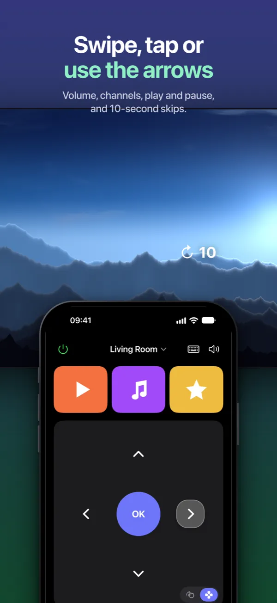
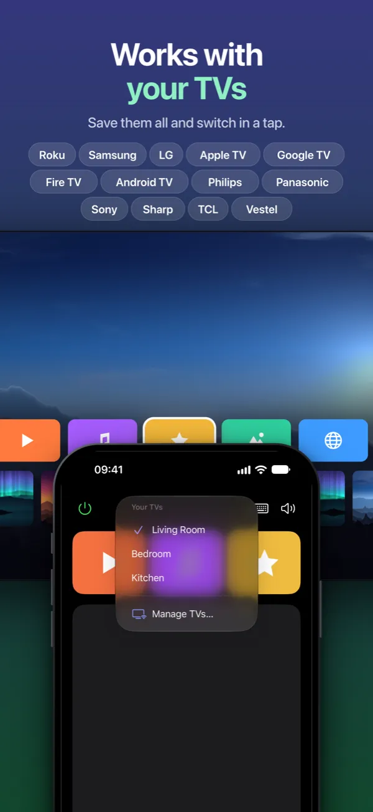
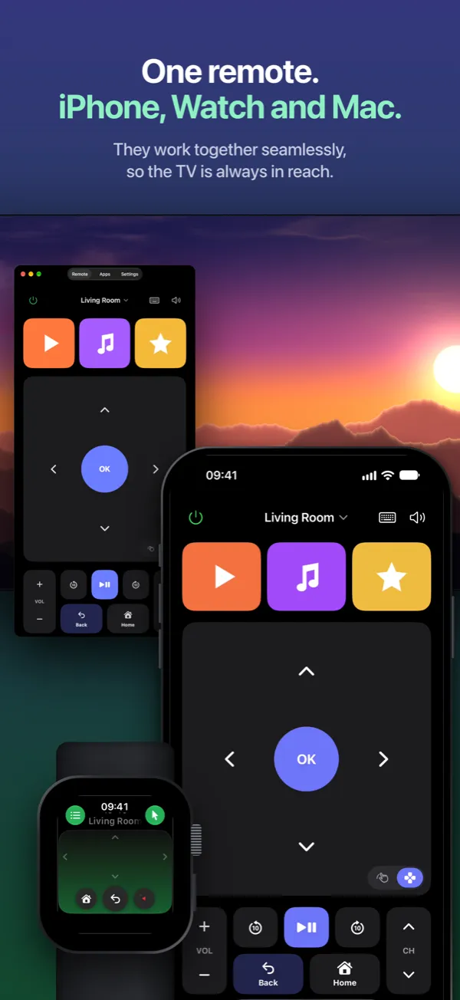

Use your iPhone as a Sharp AQUOS remote
Cingle Remote controls Sharp AQUOS TVs with IP control, from about 2010 to 2016, over your home Wi-Fi. Sharp TVs that run Google TV, Android TV or Roku work too, and so do the European ones made by Vestel.
What you can do on your Sharp TV
- A number pad for channel numbers
- Volume, mute, channels, play/pause and 10-second skips, and the volume buttons on your iPhone change the TV's volume
- Swipe and tap on a large pad, or use the arrows and OK



Connecting your Sharp TV
- Turn on the TV and make sure it's on the same Wi-Fi as your iPhone.
- Open Cingle. It finds the TV by itself: when iOS asks whether Cingle can find devices on your local network, tap Allow. You can also add the TV by its IP address, in Settings › Devices › Add a TV by IP address.
- Then:
- AQUOS with IP control: on the TV, press Menu and go to Internet Setup (under Initial Setup or Smart TV), then set AQUOS Remote Control (IP Control Setup on older TVs) to Enable, with port 10002. If you set a login ID and password there, Cingle asks for them once.
- Sharp TVs that run Google TV, Android TV or Roku connect as those instead.
- Sharp TVs sold in Europe since 2014 are mostly made by Vestel: add those under Vestel.
On your Apple Watch
Pair the TV on your iPhone and your Apple Watch is ready, with no code to type: swipe and tap to move around, and turn the Digital Crown for volume. The Watch goes through your iPhone, which needs to be nearby.
On your Mac
Your Mac finds the same TVs. The arrow keys move around, Return selects, Space plays or pauses and Delete goes back; the Remote menu has the rest.
Other TVs Cingle supports
Every TV Cingle supports, including Apple TV and the TVs that run Google TV, Android TV, Fire TV or Roku.
Get Cingle Remote
Your iPhone, iPad, Apple Watch and Mac, ready for your TV. No ads, ever.
For iOS 18, iPadOS 18, watchOS 10 and macOS 15 or later.
Questions? The support page has answers, and how to reach the developer.